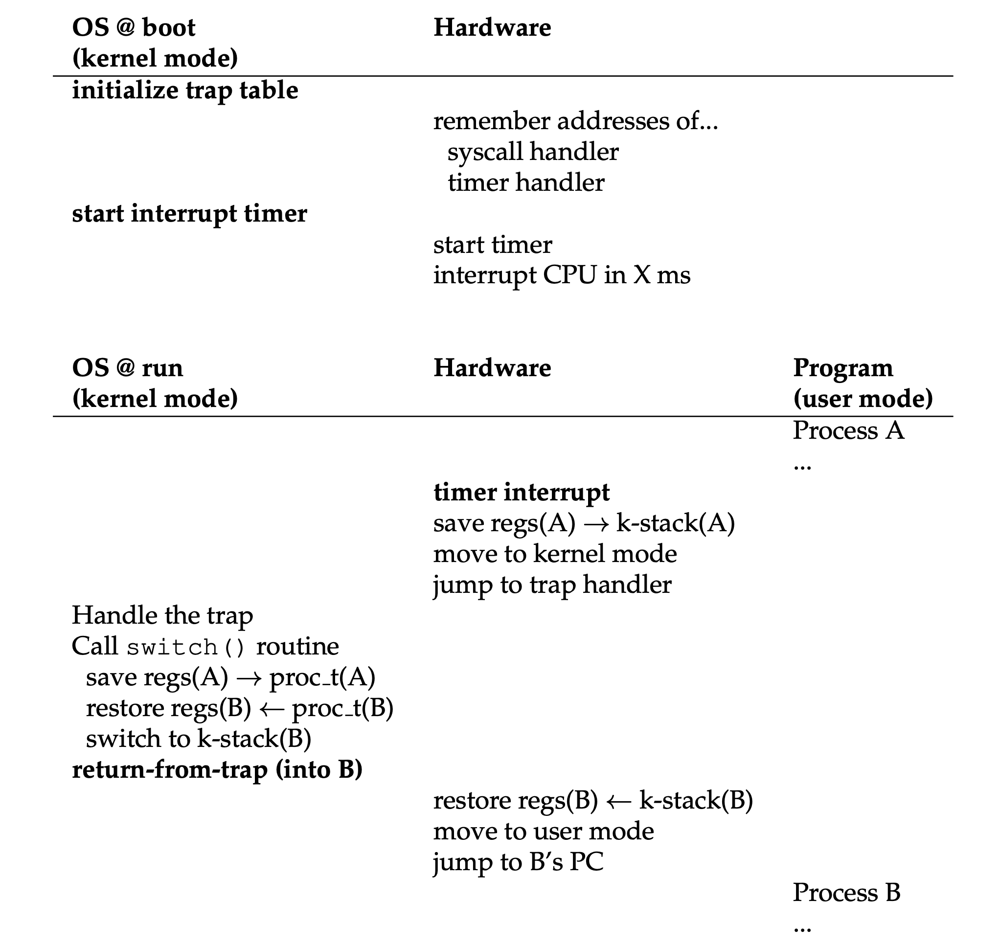

《Operating Systems: Three Easy Pieces》读书笔记（第 1-13 章）
闻名已久的操作系统著作，今日拜读一下。在线版本可以在这里找到，本文是第 1-13 章的笔记。内容基于自身情况记录，仅供参考，Dialogue 的相关章节已略过。
Chapter 1: A Dialogue on the Book
（略）
Chapter 2: Introduction to Operating Systems
- OS (aka Virtual Machine, Supervisor, Master Control Program) uses Virtualization technique to provide a more easy-to-use layer (System Calls -> Standard Library) for the above applications.
- CPU Virtualization: turning a single CPU into a seemingly infinite number of CPUs and thus allowing many programs to seemingly run at once.
- Memory Virtualization: each process accesses its own private virtual address space (VAS), which the OS somehow maps onto the physical memory of the machine.
- Brief history of the OS:
- Library: including commonly-used functions called by human operator.
- System Call: adding user mode and kernel mode to provide protection for the OS.
- Multiprogramming: loading a number of jobs into memory and switch rapidly between them.
- Unix: leveraged by most of the OSes internally.
Chapter 3: A Dialogue on Virtualization
（略）
Chapter 4: The Abstraction - Process
- The constitution of a Process (PCB): VAS, registers, IO information.
// A real case: xv6.
// Per-process state
struct proc {
uint sz; // Size of process memory (bytes)
pde_t* pgdir; // Page table
char *kstack; // Bottom of kernel stack for this process
enum procstate state; // Process state
int pid; // Process ID
struct proc *parent; // Parent process
struct trapframe *tf; // Trap frame for current syscall
struct context *context; // swtch() here to run process
void *chan; // If non-zero, sleeping on chan
int killed; // If non-zero, have been killed
struct file *ofile[NOFILE]; // Open files
struct inode *cwd; // Current directory
char name[16]; // Process name (debugging)
};
- Three process states (at least, some may have Initial and Final states):
- Running: a process is running on a processor.
- Ready: a process is ready to run but for some reason the OS has chosen not to run it at this given moment.
- Blocked (Waiting): a process has performed some kind of operation that makes it not ready to run until some other event takes place (e.g. waiting for IO request finished).
Chapter 5: Interlude - Process API
- Process-related calls:
- (POSIX.1) fork(): creating new process.
- Under Linux, fork() is implemented using copy-on-write pages, so the only penalty that it incurs is the time and memory required to duplicate the parent’s page tables, and to create a unique task structure for the child.
- (POSIX.1) wait() / waitpid(): waiting for children processes to finish.
- (POSIX.1) exec(): replacing the current process image with a new process image.
- (POSIX.1) kill(): sending signals to a process.
- (POSIX.1) signal(): setting the way of disposition for specific signal.
- C Standard Library V.S. Standard C Library: there are some interfaces that are not part of the C Standard, but part of the Standard C Library implementation (e.g. glic), for example the APIs defined in unistd.h that exposed the access to POSIX OS APIs.
- Unix pipes are implemented with the system call - pipe().
- the separation of fork() and exec() enables features like: input/output redirection, pipes, and other cool features, all without changing anything about the programs being run.
Chapter 6: Mechanism - Limited Direct Execution
- Two modes of execution: user mode (restricted) & kernel mode (privileged).
- Limited Direct Execution（LDE）: run the program directly on the CPU with some controls.
- Each process has a kernel stack to save and restore the user registers duting context-switching.
- OS regains control of the CPU by:
- Cooperative Approach: the OS regains control of the CPU by waiting for a system call or an illegal operation of some kind to take place.
- Non-Cooperative Approach: setup a programmed timer device to raise an interrupt every so many milliseconds. When the interrupt is raised, the currently running process is halted, and a pre-configured interrupt handler in the OS runs. At this point, the OS has regained control of the CPU.
- Context Switch: implemented by saving(restoring) a few register values onto(from) the process’s kernel stack. The tool “lmbench” can measure the time consumed of this process. Below is an example in xv6:
struct context {
uint edi;
uint esi;
uint ebx;
uint ebp;
uint eip;
};
Assembly implementation of the context-switch logic:
# Context switch |----------------| (after "pushl %edi")
# | ptr_new (%edx) | --> | struct context |
# void swtch(struct context **old, struct context *new); | ptr_old (%eax) | --> | *(struct context) | --> | struct context |
# | %eip |
# Save the current registers on the stack, creating | %ebp |
# a struct context, and save its address in *old. | %ebx |
# Switch stacks to new and pop previously-saved registers. | %esi |
# | %edi |
# |----------------| <- %esp
.globl swtch
swtch:
movl 4(%esp), %eax # old ptr.
movl 8(%esp), %edx # new ptr.
# Save old callee-saved registers, the value of %eip is already on the stack.
pushl %ebp
pushl %ebx
pushl %esi
pushl %edi
# Switch stacks.
movl %esp, (%eax) # Save new address to *old.
movl %edx, %esp
# Load new callee-saved registers.
popl %edi
popl %esi
popl %ebx
popl %ebp
ret # Will pop %eip direclty after return.
- Limited Direct Execution with timer interruption:

Chapter 7: Scheduling - Introduction
- Scheduling metrics (below two are mutually exclusive):
- Turnaround Time: Tturnaround = Tcompletion - Tarrival.
- Response Time: Tresponse = Tfirstrun - Tarrival.
- CPU scheduling algorithms:
- FIFO: serve by their sequence, but may incur convoy effect (a number of relatively-short potential consumers of a resource get queued behind a heavyweight resource consumer).
- SJF (Shortest Job First): run the shortest job first, then the next shortest, and so on.
- STCF (Shortest Time-to-Completion First): based on SJF, job can preempt the existing running jobs via context-switching.
- RR (Round-Robin): runs a job for a time slice (aka scheduling quantum, must be a multiple of the timer-interrupt period) and then switches to the next job in the run queue. The length of the time slice is critical (response time V.S. context-switching penalty).
- An example of STCF with I/O operations considered:
- Task A: CPU - 50ms, runs for 10 ms and then issues an I/O request which takes 10ms for each.
- Task B: CPU - 50ms, no I/O request.

Chapter 8: Scheduling - The Multi-Level Feedback Queue
- MLFQ (Multi-Level Feedback Queue):

- It has a number of distinct queues, each assigned a different priority level.
- It uses priorities to decide which job should run at a given time: a job with higher priority (i.e., a job on a higher queue) is chosen to run.
- Rule 1: If Priority(A) > Priority(B), A runs (B doesn’t).
- Rule 2: If Priority(A) = Priority(B), A & B run in round-robin fashion using the time slice (quantum length) of the given queue.
- Rule 3: When a job enters the system, it is placed at the highest priority (the topmost queue).
- Rule 4: Once a job uses up its time allotment at a given level (regardless of how many times it has given up the CPU), its priority is reduced (i.e., it moves down one queue).
- Rule 5: After some time period S, move all the jobs in the system to the topmost queue.
- Some voo-doo constants need to consider:
- How many queues? 60.
- How big should the time slice be per queue? 20ms (highest) -> hundred ms (lowest).
- How often should priority be boosted? 1s or so.
- Other variants:
- Use mathematical formulae to calculate the priority level of a job, basing it on how much CPU
the process has used. - Reserve the highest priority levels for operating system work.
- Allow some user advice to help set priorities via CLI, like
nice.
- Use mathematical formulae to calculate the priority level of a job, basing it on how much CPU
- Learn from history based on the basic principle:
- I/O intensive - hight priority.
- CPU intensive - low priority.
Chapter 9: Scheduling - Proportional Share
- Proportional-share (fair-share) scheduler: a scheduler that guarantees that each job could obtain a certain percentage of CPU time.
- Lottery Scheduling: every so often, hold a “lottery” (a random number) to determine which process should get to run next.
- The longer these jobs complete, the more likely they are to achieve the desired percentages.
- Ticket currency: it allows a user with a set of tickets to allocate tickets among their own jobs in whatever currency they would like.
- Ticket transfer: a process can temporarily hand off its tickets to another process.
- Ticket inflation: a process can temporarily raise or lower the number of tickets it owns.
- Cons: the ticket-assignment problem (how to choose tickets?).
- Stride Scheduling: at any given time, pick the process to run that has the lowest pass value so far; when you run a process, increment its pass counter by its stride.
- Each job in the system has a stride, which is inverse in proportion to the number of tickets it has (a large number / #tickets).
- Cons: how to treat new processes for their initial pass?
- CFS (Completely Fair Scheduler):
- CFS is being used inside Linux kernel, based on counting-based technique known as virtual runtime (vruntime), each process’s vruntime increases at the same rate, in proportion with physical (real) time. When a scheduling decision occurs, it will pick the process with the lowest vruntime to run next.
- CFS uses the value “sched_latency“ (usually 48ms) to determine how long one process should run before considering a switch. CFS divides this value by the number (n) of processes running on the CPU to determine the time slice for a process. CFS adds another parameter, “min_granularity“, which is usually set to a value like 6ms as the minimum time slice.
- CFS utilizes a periodic timer interrupt, it goes off frequently (e.g., every 1 ms), giving CFS a chance to wake up and determine if the current job has reached the end of its run.
- CFS keeps running processes in a red-black tree for a better search and insertion. Processes are ordered in the tree by vruntime, and most operations (such as insertion and deletion) are
logarithmic in time. - CFS sets the vruntime for the newly inserted job to the minimum value found in the RB tree.
Chapter 10: Multiprocessor Scheduling (Advanced)
- The issues may occur for multiple CPUs:
- Cache Coherence: a running program has the correct latest data on CPU 1 but not CPU 2 due to the old data retrieved from main memory after scheduling. This issue could be solved by bus snooping.
- Concurrency: as the number of CPUs grows, access to a synchronized (with locks) shared data structure becomes quite slow.
- Cache Affinity: the states of the running process are not reused after the CPU scheduling.
- SQMS (Single-Queue Multiprocessor Scheduling): putting all jobs that need to be scheduled into a single queue, but it does not scale well (due to synchronization overheads), and it does not readily preserve cache affinity.
- How to keep load cache affinity? A: Most SQMS schedulers include some kind of affinity mechanism to try to make it more likely that process will continue to run on the same CPU if possible (like above, job E will be migrating from CPU to CPU).
- MQMS (Multi-Queue Multiprocessor Scheduling): based on SQMS, using multiple queues, one per CPU. When a job enters the system, it is placed on exactly one scheduling queue, according to some heuristic (e.g., random, or picking one with fewer jobs than others).
- How to solve load imbalance? A: With a work-stealing approach, a (source) queue that is low on jobs will occasionally peek at another (target) queue, to see how full it is. If the target queue is (notably) more full than the source queue, the source will “steal” one or more jobs from the target to help balance load.
Chapter 11: Summary Dialogue on CPU Virtualization
（略）
Chapter 12: A Dialogue on Memory Virtualization
（略）
Chapter 13: The Abstraction - Address Spaces
（内容过于基础，遂略）